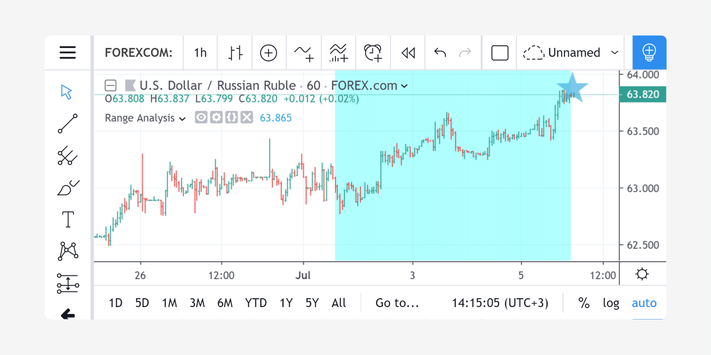

FAQ¶
- Get real OHLC price on a Heikin Ashi chart
- Get non-standard OHLC values on a standard chart
- Plot arrows on the chart
- Plot a dynamic horizontal line
- Plot a vertical line on condition
- Access the previous value
- Get a 5-days high
- Count bars in a dataset
- Enumerate bars in a day
- Find the highest and lowest values for the entire dataset
- Query the last non-na value
Get real OHLC price on a Heikin Ashi chart¶
Suppose, we have a Heikin Ashi chart (or Renko, Kagi, PriceBreak etc) and we’ve added a Pine script on it:
//@version=5
indicator("Visible OHLC", overlay=true)
c = close
plot(c)
You may see that variable c is a Heikin Ashi close price which is not
the same as real OHLC price. Because close built-in variable is always
a value that corresponds to a visible bar (or candle) on the chart.
So, how do we get the real OHLC prices in Pine Script® code, if current
chart type is non-standard? We should use request.security function in
combination with ticker.new function. Here is an example:
//@version=5
indicator("Real OHLC", overlay = true)
t = ticker.new(syminfo.prefix, syminfo.ticker)
realC = request.security(t, timeframe.period, close)
plot(realC)
In a similar way we may get other OHLC prices: open, high and low.
Get non-standard OHLC values on a standard chart¶
Backtesting on non-standard chart types (e.g. Heikin Ashi or Renko) is not recommended because the bars on these kinds of charts do not represent real price movement that you would encounter while trading. If you want your strategy to enter and exit on real prices but still use Heikin Ashi-based signals, you can use the same method to get Heikin Ashi values on a regular candlestick chart:
//@version=5
strategy("BarUpDn Strategy", overlay = true, default_qty_type = strategy.percent_of_equity, default_qty_value = 10)
maxIdLossPcntInput = input.float(1, "Max Intraday Loss(%)")
strategy.risk.max_intraday_loss(maxIdLossPcntInput, strategy.percent_of_equity)
needTrade() => close > open and open > close[1] ? 1 : close < open and open < close[1] ? -1 : 0
trade = request.security(ticker.heikinashi(syminfo.tickerid), timeframe.period, needTrade())
if trade == 1
strategy.entry("BarUp", strategy.long)
if trade == -1
strategy.entry("BarDn", strategy.short)
Plot arrows on the chart¶
You may use plotshape with style shape.arrowup and
shape.arrowdown:
//@version=5
indicator('Ex 1', overlay = true)
condition = close >= open
plotshape(condition, color = color.lime, style = shape.arrowup, text = "Buy")
plotshape(not condition, color = color.red, style = shape.arrowdown, text = "Sell")
You may use the plotchar function with any unicode character:
//@version=5
indicator('buy/sell arrows', overlay = true)
condition = close >= open
plotchar(not condition, char='↓', color = color.lime, text = "Buy")
plotchar(condition, char='↑', location = location.belowbar, color = color.red, text = "Sell")
Plot a dynamic horizontal line¶
There is the function hline in Pine Script®, but it is limited to only plot a constant value.
Here is a simple script with a workaround to plot a changing hline:
//@version=5
indicator("Horizontal line", overlay = true)
plot(close[10], trackprice = true, offset = -9999)
// `trackprice = true` plots horizontal line on close[10]
// `offset = -9999` hides the plot
plot(close, color = #FFFFFFFF) // forces display
Plot a vertical line on condition¶
//@version=5
indicator("Vertical line", overlay = true, scale = scale.none)
// scale.none means do not resize the chart to fit this plot
// if the bar being evaluated is the last baron the chart (the most recent bar), then cond is true
cond = barstate.islast
// when cond is true, plot a histogram with a line with height value of 100,000,000,000,000,000,000.00
// (10 to the power of 20)
// when cond is false, plot no numeric value (nothing is plotted)
// use the style of histogram, a vertical bar
plot(cond ? 10e20 : na, style = plot.style_histogram)
Access the previous value¶
//@version=5
//...
s = 0.0
s := nz(s[1]) // Accessing previous values
if (condition)
s := s + 1
Get a 5-days high¶
Lookback 5 days from the current bar, find the highest bar, plot a star character at that price level above the current bar
//@version=5
indicator("High of last 5 days", overlay = true)
// Milliseconds in 5 days: millisecs * secs * mins * hours * days
MS_IN_5DAYS = 1000 * 60 * 60 * 24 * 5
// The range check begins 5 days from the current time.
leftBorder = timenow - time < MS_IN_5DAYS
// The range ends on the last bar of the chart.
rightBorder = barstate.islast
// ————— Keep track of highest `high` during the range.
// Intialize `maxHi` with `var` on bar zero only.
// This way, its value is preserved, bar to bar.
var float maxHi = na
if leftBorder
if not leftBorder[1]
// Range's first bar.
maxHi := high
else if not rightBorder
// On other bars in the range, track highest `high`.
maxHi := math.max(maxHi, high)
// Plot level of the highest `high` on the last bar.
plotchar(rightBorder ? maxHi : na, "Level", "—", location.absolute, size = size.normal)
// When in range, color the background.
bgcolor(leftBorder and not rightBorder ? color.new(color.aqua, 70) : na)
Count bars in a dataset¶
Get a count of all the bars in the loaded dataset. Might be useful for calculating flexible lookback periods based on number of bars.
//@version=5
indicator("Bar Count", overlay = true, scale = scale.none)
plot(bar_index + 1, style = plot.style_histogram)
Enumerate bars in a day¶
//@version=5
indicator("My Script", overlay = true, scale = scale.none)
isNewDay() =>
d = dayofweek
na(d[1]) or d != d[1]
plot(ta.barssince(isNewDay()), style = plot.style_cross)
Find the highest and lowest values for the entire dataset¶
//@version=5
indicator("", "", true)
allTimetHi(source) =>
var atHi = source
atHi := math.max(atHi, source)
allTimetLo(source) =>
var atLo = source
atLo := math.min(atLo, source)
plot(allTimetHi(close), "ATH", color.green)
plot(allTimetLo(close), "ATL", color.red)
Query the last non-na value¶
You can use the script below to avoid gaps in a series:
//@version=5
indicator("")
series = close >= open ? close : na
vw = fixnan(series)
plot(series, style = plot.style_linebr, color = color.red) // series has na values
plot(vw) // all na values are replaced with the last non-empty value